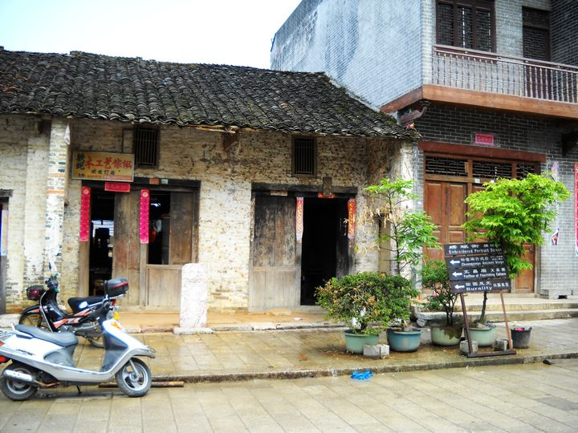
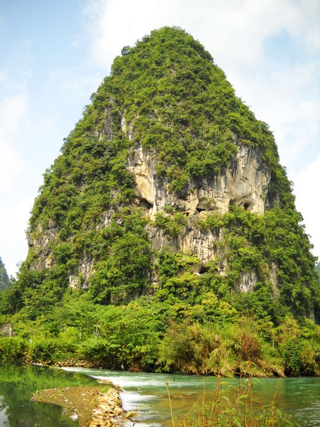
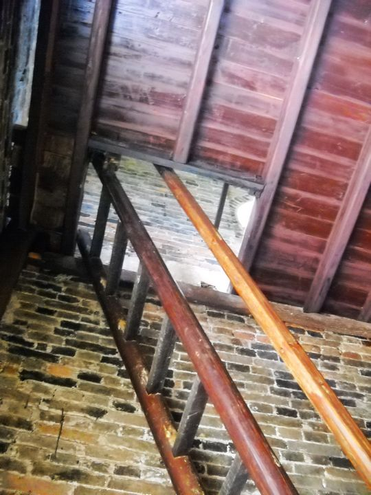

旧州位于广西边境城市“靖西”，到了靖西新客运站“靖宇客运站”后，出站右走，大约三百米，到达“T”字路口，再右转到达“汽车客运南站”，就在南站对面马路等车，就可以踏上去旧州的路了。票价约三元，不过记得要跟车上售票员说你要到旧州。旧州离路边大约要走10多分钟，进了旧州牌坊，就是美丽的绣球之乡--旧州了。
沿着街道一直往前，会有路牌指引你到旧州标志性建筑“文昌阁”，总之，不论如何，请你不要带着任何负担到这里，抬头仰望天空，你会发现这海上长出来的云朵是多么纯净，葱郁的石山远比城市的建筑森林要令人感觉亲近。


